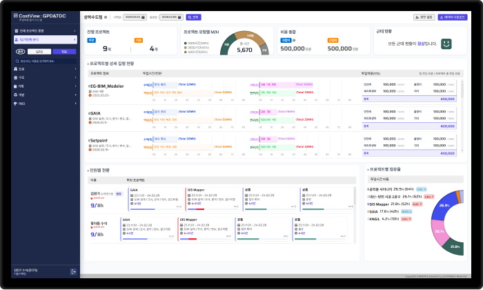
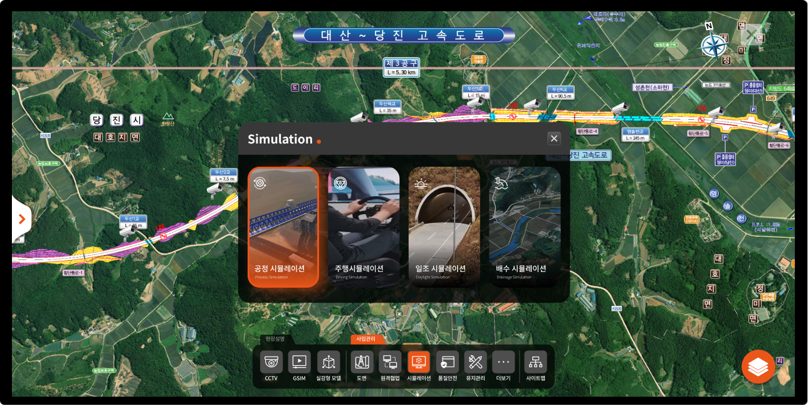
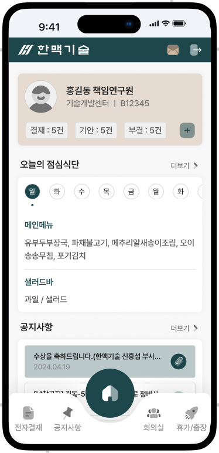
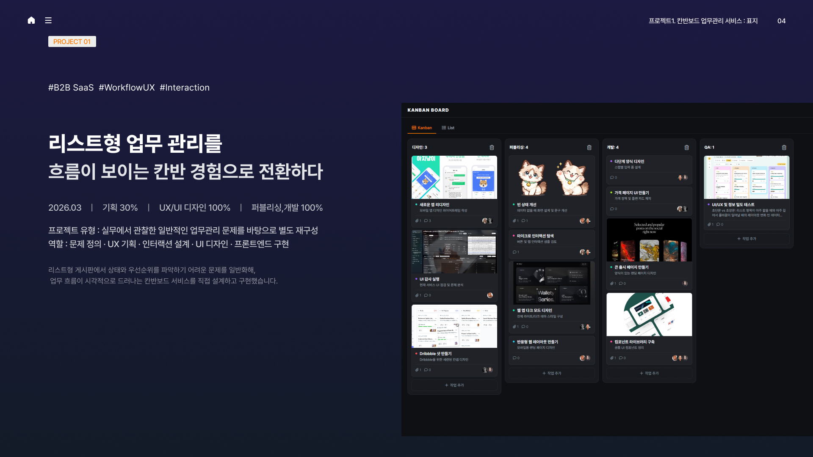
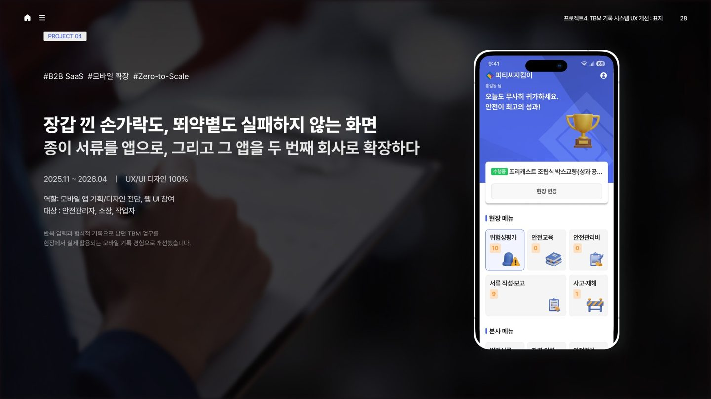
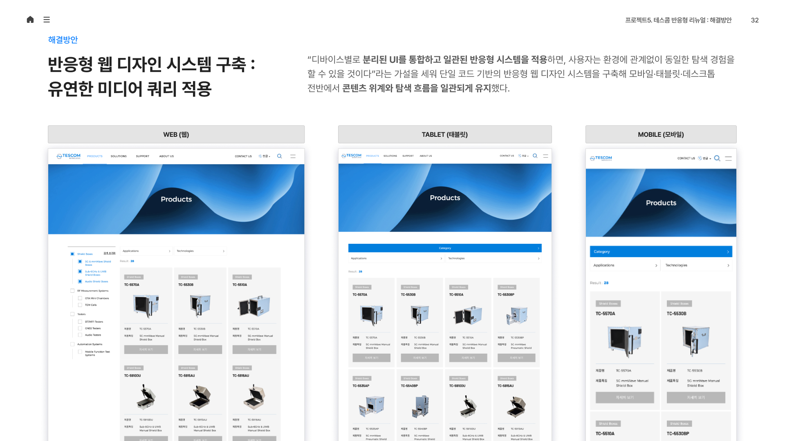
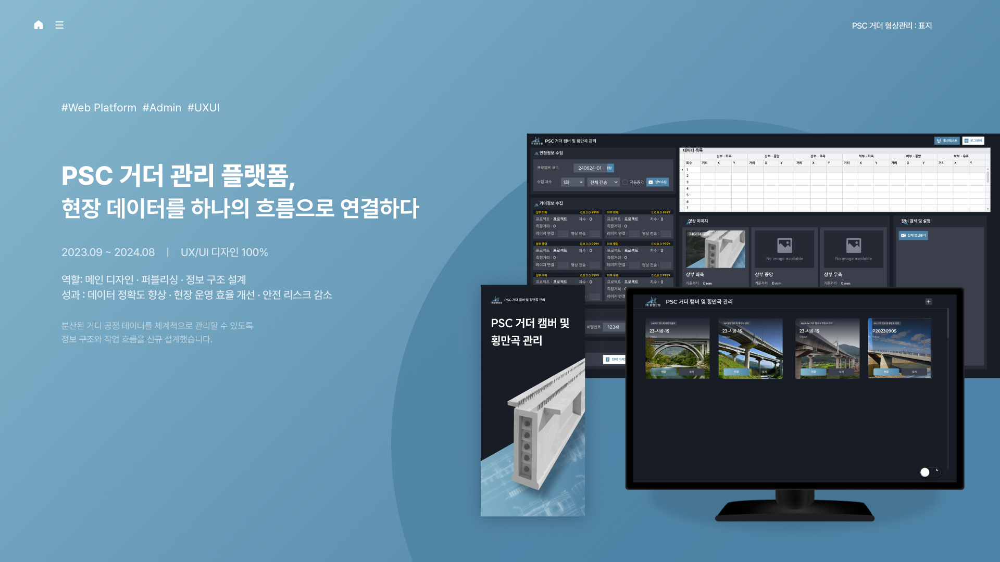
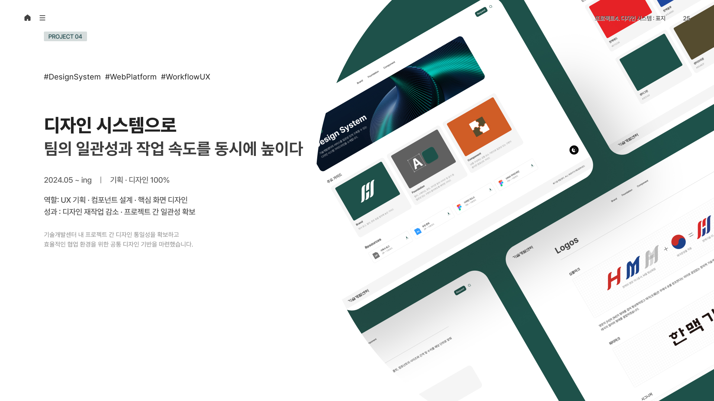
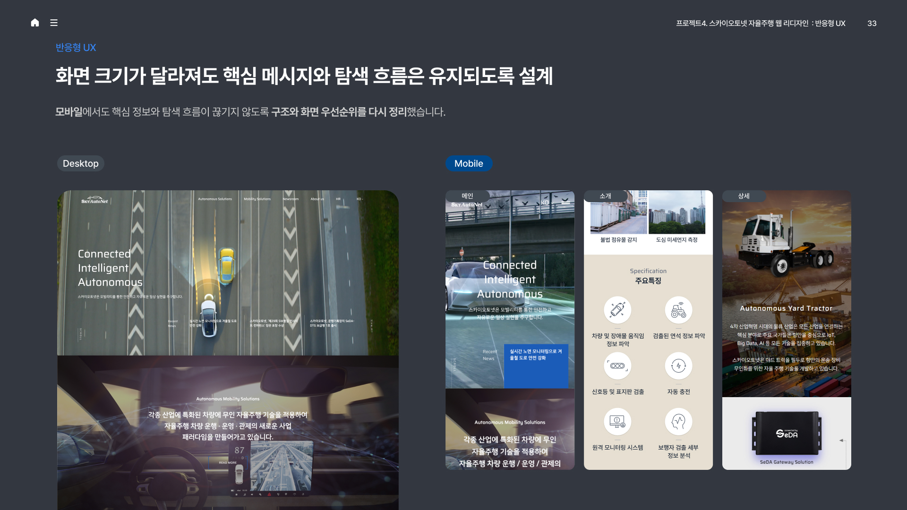
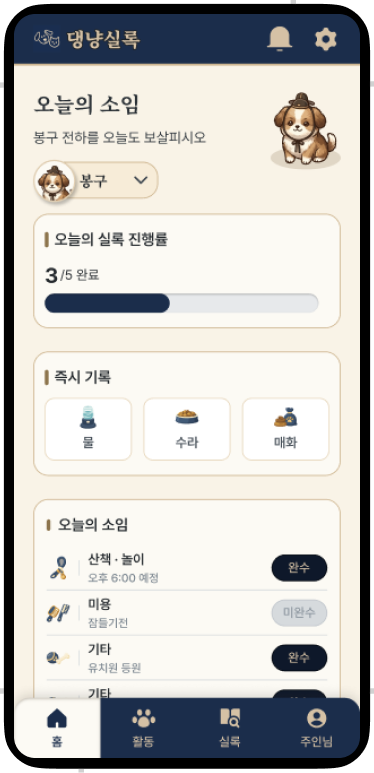

PRODUCT DESIGNER · B2B & DATA UX
복잡한 B2B 업무를,
판단하고 실행하기 쉽게.
프로덕트 디자이너 이한울입니다.
ERP와 업무 플랫폼의 정보를 사용자 역할에 맞게 구조화하고,
UI 설계부터 작동하는 프로토타입까지 연결합니다.

01 — 대표 프로젝트
ERP · 통합 플랫폼 · 모바일 업무 흐름
프로젝트 비용·인원
ERP 분석 대시보드
흩어진 프로젝트 비용·인원 데이터를 하나의 화면에서 확인하고, 사용자가 더 빠르게 판단할 수 있도록 정보 구조를 재설계했습니다.
2025.12—2026.03 · UX/UI 설계 · 퍼블리싱
비용·인원 현황을 역할별 판단 화면으로 통합

대규모 통합 관리
플랫폼
서로 다른 목적의 사용자가 하나의 플랫폼에서 필요한 정보를 빠르게 찾도록 탐색 구조를 재설계했습니다.
2023.01—2023.12 · IA · UX/UI · 퍼블리싱역할별 진입점과 지도 기반 탐색을 하나로 연결
프로젝트 자세히 보기 ↗
전자결재·회의실 예약
모바일 업무 포털
PC 중심으로 끊겨 있던 전자결재와 회의실 예약 업무를 모바일에서 바로 처리할 수 있는 흐름으로 재설계했습니다.
2023.01—2023.06 · 모바일 UX/UI 설계결재·예약을 모바일에서 완료하는 흐름
프로젝트 자세히 보기 ↗04—10 · 추가 프로젝트
프로토타이핑 · 현장 UX · 디자인 시스템 · 웹
칸반보드 업무관리
서비스
2026.03— · 개인 프로토타입 · UX/UI·구현

05 · MOBILE UX / WORKFLOW / FIELD PRODUCT현장 기록의
모바일 전환 UX
2025.11—2026.04 · 현장 조사·모바일 UX/UI

06 · RESPONSIVE WEB / UI RENEWAL디바이스 경험을 연결한
반응형 웹 전면 리뉴얼
2023.03—2023.11 · 웹 UX/UI·반응형 설계

07 · B2B PLATFORM / FIELD DATA현장 데이터를 연결한
PSC 거더 관리 플랫폼
2023.08—2024.08 · 웹·앱 UX/UI·퍼블리싱

08 · DESIGN SYSTEM / WEB PLATFORM일관성과 작업 속도를 높인
디자인 시스템
2024.05— · 컴포넌트·UI 가이드 설계

09 · WEB UX / BRAND UX / RESPONSIVE자율주행 기술을 이해시키는
반응형 웹 리디자인
2023.03—2023.11 · IA·웹 UI·퍼블리싱 참여

10 · PERSONAL PROJECT / HABIT UX기록을 습관으로 만드는
반려동물 건강관리 UX
2026.02— · 개인 프로젝트 · UX·브랜딩·UI

02 — 디자인 관점
업무를 이해하고, 정보를 구조화하고,
작동하는 화면으로 연결합니다.
03 — 소개와 실행
문제를 정의하고,
구현까지 이어지는 답을 만듭니다.
B2B 업무·데이터 UX에 강점을 둔 프로덕트 디자이너입니다. ERP, 현장 플랫폼, 모바일 업무 도구에서 사용자가 필요한 정보를 찾고 판단한 뒤 실행하는 흐름을 설계해왔습니다.
웹디자인과 퍼블리싱으로 시작해 제품의 정보 구조와 업무 흐름까지 설계 범위를 넓혔습니다. UX/UI 설계를 기반으로, 개발자와 협업하고 핵심 인터랙션은 프로토타입으로 구체화합니다.
04 — 연락처